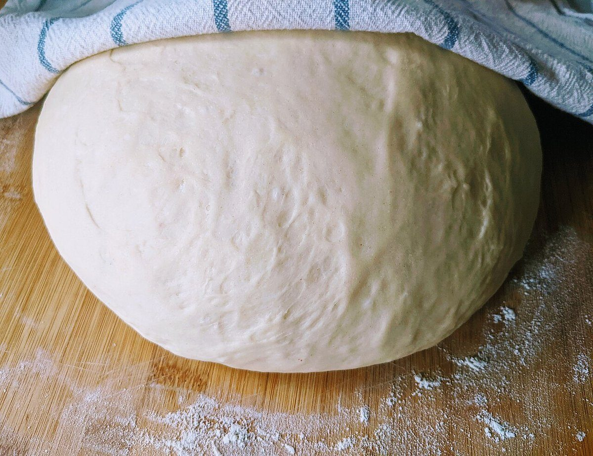

ベルテンポ
制作側の連想
「テンポ」から、速度標語の目盛り帖
店名の由来は分かりません。制作側は「テンポ」という響きから、音楽の速度標語(ラルゴ、アンダンテ、プレストなど)を連想しました。そこでこのサイトは、遅いものから速いものまで七つの標語を目盛りに見立て、パンづくりの流れを思い浮かべながら並べる作りにしています。制作側の連想で、お店の理念・由来とは無関係です。お店の実際の作り方や商品を示すものでもありません。
七つの速度標語(イメージ)
ゆっくりから、いそぎ足まで。
写真は魚津市やお店のものではありません。国外・撮影地不明のフリー素材のイメージです。
- 50♩=bpm
Largoラルゴ
ゆったりと幅広く。まずは粉から。

撮影地不明のイメージ - 70♩=bpm
Adagioアダージョ
くつろいで。粉とバターをそっと合わせる。

撮影地不明のイメージ - 90♩=bpm
Andanteアンダンテ
歩くように。生地をのばす拍。

撮影地不明のイメージ - 110♩=bpm
Moderatoモデラート
ほどよく。ふくらんで落ち着く拍。

撮影地不明のイメージ - 130♩=bpm
Allegroアレグロ
快活に。こんがり色づく拍。

撮影地不明のイメージ - 160♩=bpm
Vivaceヴィヴァーチェ
生き生きと。層を重ねたような拍。

撮影地不明のイメージ - 184♩=bpm
Prestoプレスト
急速に。焼きたてへ駆けこむ拍。

撮影地不明のイメージ
ご案内
お店のこと(確認できたものだけ)
| 所在地 | 〒937-0055 富山県魚津市中央通り２丁目１−１５ |
|---|---|
| 電話 | 0765-55-1717 |
| 営業時間 | 準備中 |
| 定休日 | 準備中 |
| ご予約 | 準備中 |
| 駐車場 | 準備中 |
| SNS | Instagram @beltempo72 |